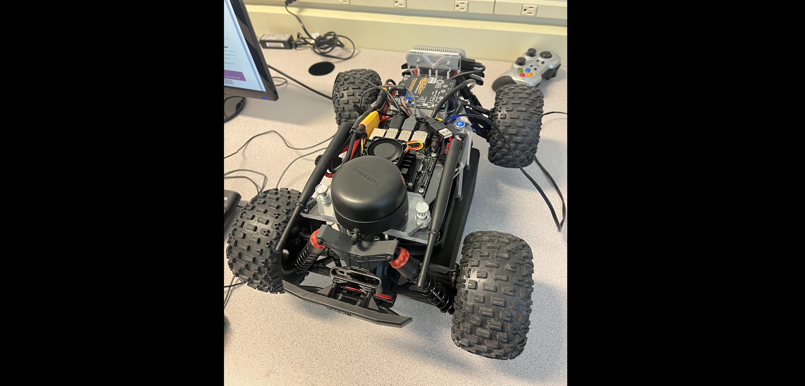
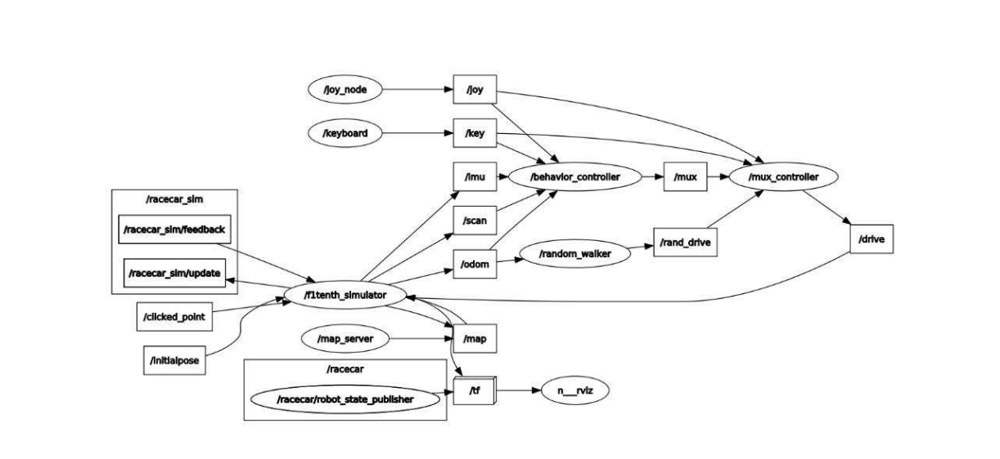
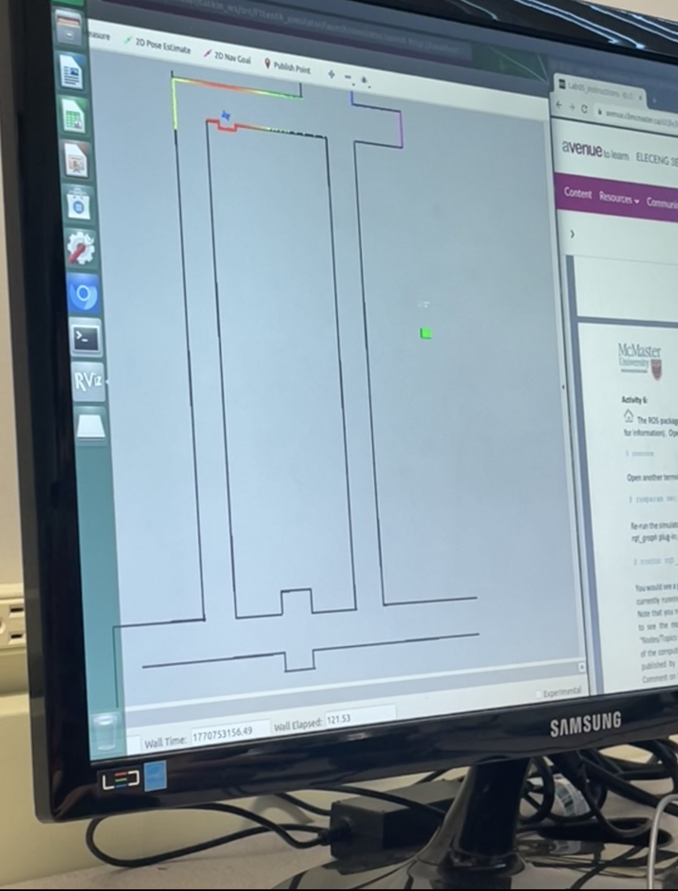
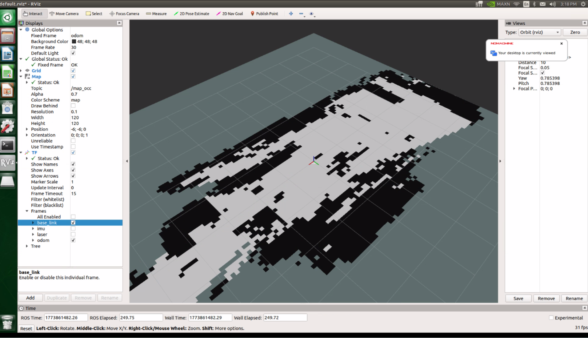
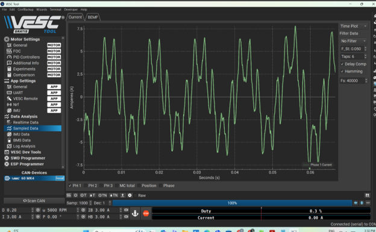

ELECENG 3EY4
Electrical Systems Integration Project
A systems-level engineering project focused on the McMaster Autonomous Electrified Vehicle (AEV), combining electric propulsion, Linux, ROS, sensing, localization, mapping, and autonomous driving.
Project snapshot
This project brought together multiple areas of electrical engineering through a small-scale autonomous vehicle platform. Work across the term included Linux and ROS setup, sensor integration, VESC and propulsion experiments, manual driving and odometry calibration, localization and occupancy grid mapping, and autonomous wall-following control.

Focus
System integration across software, controls, sensors, and propulsion.
Platform
McMaster Autonomous Electrified Vehicle built on a small RC vehicle platform.
Tools
Linux, ROS, Python, C/C++, MATLAB/Simulink, rviz, VESC Tool.
Outcome
From manual operation and calibration to mapping and autonomous vehicle control.
What the project was about
ELECENG 3EY4 was a design and implementation project centered on electrified autonomous vehicles. The course integrated topics from electric machines and drives, robotics, control systems, estimation, signal processing, and optimization through weekly and biweekly project milestones.
The project used the McMaster AEV platform and expected students to develop and integrate software and hardware modules for sensing, planning, and control, progressing from manual driving to driver-assist and then more autonomous functionality.
What I contributed
I contributed to the system integration workflow by working across setup, testing, debugging, and implementation tasks tied to the AEV platform. My work involved connecting theory from prior courses to hands-on vehicle behavior, software tools, and real sensor-driven experimentation.
- Set up and worked within Linux and ROS environments
- Tested AEV components and software stack behavior
- Worked with vehicle sensing and integration concepts
- Contributed to localization, mapping, and control activities
- Connected lab outputs to technical reporting and system understanding
Why this project stands out
This project stands out because it was not just about one isolated circuit or one software task. It required understanding how propulsion, sensing, software, frames of reference, and control logic all interact within one working engineering system.
It also pushed me to think beyond implementation and consider calibration, system behavior, testing conditions, and how modules connect into a larger technical workflow.
Main technical components
How the work progressed
1. Linux foundations
Early work focused on Linux command-line basics, which supported later programming, file management, and system control tasks on the AEV platform.
2. ROS and component testing
The next stage introduced ROS structure, including nodes, topics, and system communication, alongside testing of McMaster AEV components.
3. VESC and propulsion system work
We then worked with the electronic speed controller and propulsion system, including VESC Tool, motor operation, and speed / duty-cycle / current related experiments.
4. Manual driving and calibration
The project then moved into simulator setup, manual driving, and odometry calibration to better understand the vehicle control stack and bridge simulation with experiment.
5. Localization and mapping
Later work focused on coordinate frames, odometry, IMU usage, LiDAR scan data, and occupancy grid mapping for environment representation.
6. Autonomous driving
The final phase focused on self-driving logic, including wall following, feedback control, and barrier-based autonomous driving strategies.
Systems thinking
I had to think about how software, electronics, sensing, and mechanics worked together, not just as separate tasks.
Testing mindset
This project emphasized calibration, observation, and iterative refinement rather than one-time implementation.
Real integration work
It connected theory from multiple courses into one realistic engineering system with practical constraints.
ROS, sensors, and vehicle state
A major part of the project involved learning how the AEV software stack was structured in ROS. This included understanding nodes, topics, and frame relationships, then applying those concepts to data from the vehicle’s LiDAR, IMU, camera, and wheel odometry.
That made the project feel much more like a full embedded and robotics system rather than a standalone coding lab.
Motor drive and propulsion
Another major part of the project focused on the AEV propulsion system through the BLDC motor and VESC. This included understanding how electrical input power is converted into propulsion, how the speed controller is configured and tested, and how variables like speed, duty cycle, voltage, and current relate to system behavior.
Gallery

ROS node topology

Simulation and ROS

Localization and mapping
